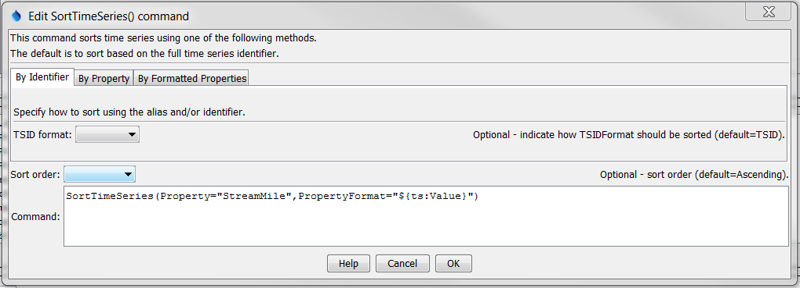
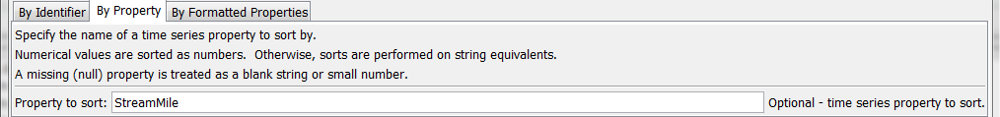
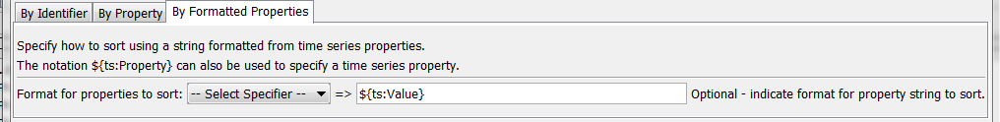

TSTool Command Reference: SortTimeSeries()
Sort time series by identifier or properties
Version 10.31.00, 2013-07-21
Contents
Summary
The SortTimeSeries() sorts time series based on the specified criteria:
- the time series identifier or alias
- a time series property
- a string formatted from time series properties
This command is useful for ordering time series before writing output or visualization.
Command Editor
The following dialog is used to edit the command and illustrates the syntax of the command.

SortTimeSeries() Command Editor Showing Parameters to Sort by TSID/Alias

SortTimeSeries() Command Editor Showing Parameter to Sort by a Time Series Property

SortTimeSeries() Command Editor Showing Parameter to Sort by Formatted Properties
Command Parameters
The command syntax is as follows:
SortTimeSeries(Parameter=Value,...)
|
Parameter
|
Description
|
Default
|
|
TSIDFormat
|
Sort by alias or TSID, determining the identifier for each
time series as per the parameter value:
- AliasTSID - use the
alias if available, and if not use the TSID
- TSID - Use the TSID only
(regardless of whether the alias is available)
|
TSID
|
|
Property
|
Sort using the values of the specified time series
property. Nulls are treated as blanks if strings and very small number for
integers and floating point numbers.
|
|
|
PropertyFormat
|
Sort using a string that formats one or more time series
properties, indicated with:
- %-specifiers (e.g., %L for location ID)
- ${ts:property} notation
|
|
|
SortOrder
|
Sort order, either Ascending
or Descending.
|
Ascending
|
Examples
A sample command file using data from the State of Colorado’s HydroBase is as follows:
06756500.USGS.Streamflow.Month~HydroBase
# 06758300 - KIOWA CREEK AT BENNETT, CO.
06758300.USGS.Streamflow.Month~HydroBase
# 06758000 - KIOWA CREEK AT ELBERT, CO.
06758000.USGS.Streamflow.Month~HydroBase
# 06757600 - KIOWA CREEK AT K-79 RES, NEAR EASTONVILLE, CO.
06757600.DWR.Streamflow.Month~HydroBase
# 06758200 - KIOWA CREEK AT KIOWA, CO.
06758200.USGS.Streamflow.Month~HydroBase
# 06753400 - LONETREE CREEK AT CARR, CO.
06753400.USGS.Streamflow.Month~HydroBase
# 06753990 - LONETREE CREEK NEAR GREELEY, CO.
06753990.USGS.Streamflow.Month~HydroBase
# 06753500 - LONETREE CREEK NEAR NUNN, CO.
06753500.USGS.Streamflow.Month~HydroBase
# 06759910 - SOUTH PLATTE RIVER AT COOPER BRIDGE NEAR BALZAC
06759910.DWR.Streamflow.Month~HydroBase
# 06759500 - SOUTH PLATTE RIVER AT FORT MORGAN
06759500.USGS.Streamflow.Month~HydroBase
# 06756995 - SOUTH PLATTE RIVER AT MASTERS, CO.
06756995.USGS.Streamflow.Month~HydroBase
# 06757000 - SOUTH PLATTE RIVER AT SUBLETTE, CO.
06757000.USGS.Streamflow.Month~HydroBase
# 06754000 - SOUTH PLATTE RIVER NEAR KERSEY
06754000.DWR.Streamflow.Month~HydroBase
# 06758500 - SOUTH PLATTE RIVER NEAR WELDONA
06758500.DWR.Streamflow.Month~HydroBase
# 06758100 - WEST KIOWA CREEK AT ELBERT, CO.
06758100.USGS.Streamflow.Month~HydroBase
SortTimeSeries()
|
Troubleshooting
There is currently no troubleshooting documentation.